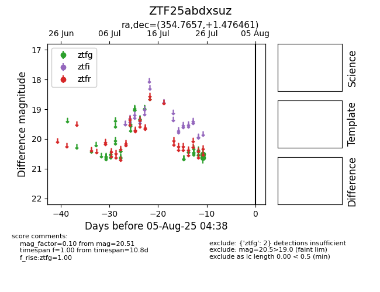

Target ZTF25abdxsuz at 2025-08-05 04:38, see:
FINK: fink-portal.org/ZTF25abdxsuz
Lasair: lasair-ztf.lsst.ac.uk/objects/ZTF25abdxsuz
ALeRCE: alerce.online/object/ZTF25abdxsuz
alt names
ZTF25abdxsuz (ztf,fink)
coordinates:
equatorial (ra, dec) = (354.7657,+1.47646)
galactic (l, b) = (88.6958,-56.50645)
photometry
last ztfg=20.51
2 ztfg detections
